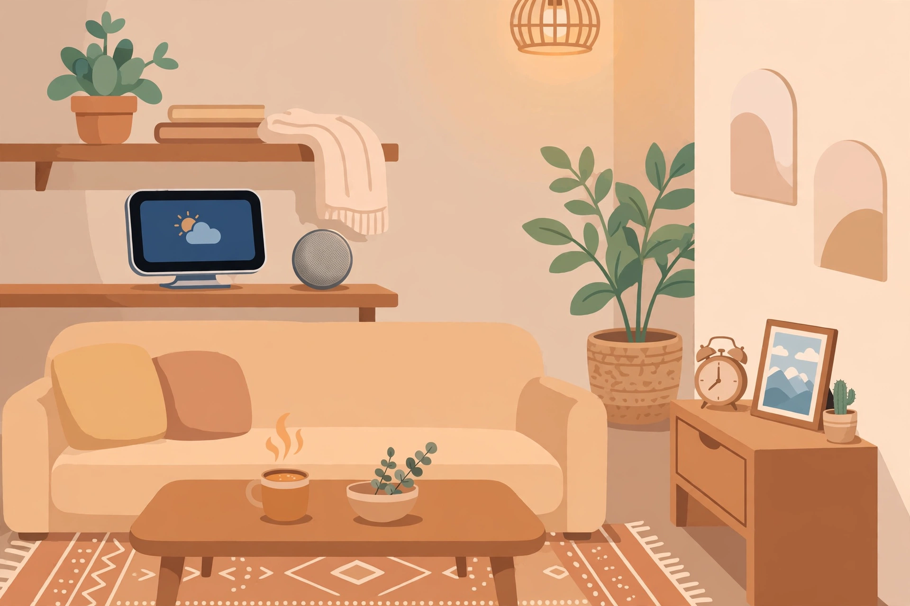

2026년 10월 30일

아마존이 10월 28일(현지 시간), 새로운 AI 비서 알렉사+(Alexa+)를 탑재한 스마트홈 기기 5종을 공개했습니다. 음성 명령만 받는 기기가 아니라, 주변을 보고 잠을 살피고 사진을 골라주는 기기들이라는 점이 특징입니다.
예전 스마트 스피커가 "불 켜줘" 같은 명령을 처리했다면, 이번 기기들은 "이게 뭐야?", "언제 깨우는 게 좋을까?", "어떤 사진을 보여줄까?"처럼 상황을 이해하는 쪽으로 한 발 더 나아갔습니다. 집 안 곳곳에 AI가 스며드는 방식이 점점 더 자연스러워지고 있네요. 다만 같은 날 기기 사업부 감원 소식도 함께 전해져, 사업 확장과 조직 효율화를 동시에 추진하는 모습도 보였습니다.
출처: AI타임스 — 아마존, AI 비서 '알렉사+' 탑재 신제품 5종 공개 · CNA — Amazon unveils new lineup of Alexa devices